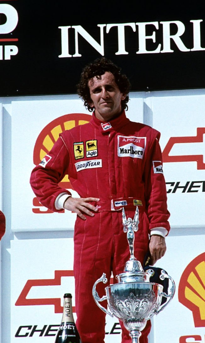

Nascido em 24 de fevereiro de 1955, na França, é um dos maiores pilotos da história da Fórmula 1, conhecido como "O Professor" devido à sua abordagem técnica e analítica das corridas. Prost conquistou 4 campeonatos mundiais entre 1985 e 1993 e teve uma rivalidade lendária com Ayrton Senna.